Factoring: UX-переработка MVP факторинговой платформы
Контекст
С чего началась работа
Команда Tekmates пригласила меня подключиться к переработке UX факторинговой платформы под кураторством старшего продуктового дизайнера. Задача была не в косметическом редизайне, а в усилении рабочего интерфейса для пользователей с разными ролями.
Перед переработкой MVP протестировали на собственных сотрудниках компании и собрали две главные боли: путаную навигацию — пользователи не понимали, где находятся и как вернуться к нужному разделу, — и нехватку статусов, из-за которой было непонятно, на каком этапе находится операция. Отсюда и задача: пересобрать навигацию и систему статусов, а не просто обновить визуал.
Задача
Что нужно было изменить
Пересобрать ключевые сценарии MVP: навигацию, работу с заявками, статусы, финансовые сущности и представление данных так, чтобы пользователи быстрее понимали, где они находятся и какое действие нужно сделать дальше.
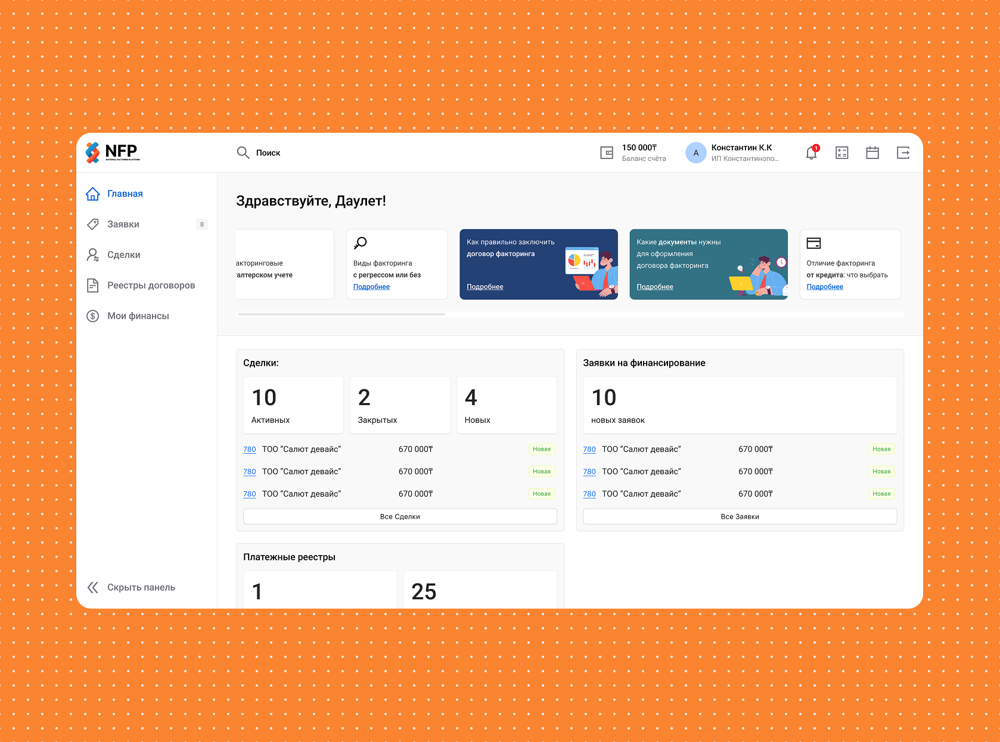
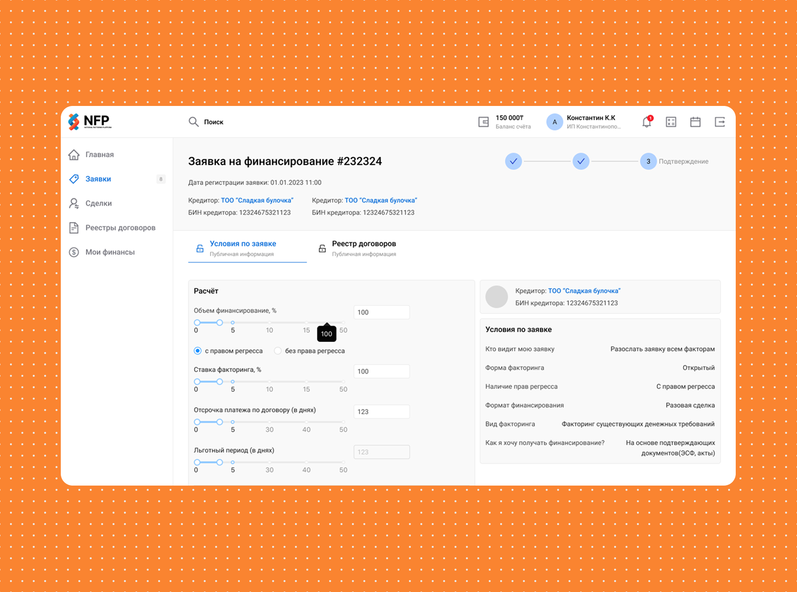
Дискавери
Сценарии и ограничения
Исследование строил вокруг трёх ролей, которые смотрят на один продукт по-разному: операционная команда, клиенты и должники. Отправной точкой стал внутренний тест на сотрудниках компании — он дал первые боли по навигации и статусам.
Дальше проверял гипотезы коридорным тестированием на живых задачах: пополнить счёт, найти и закрыть заявку на финансирование, описать, чего не хватает на главном. В финальной итерации в проверке участвовали 10 респондентов — по ним и замеряли, насколько самостоятельно люди справляются со сценариями.
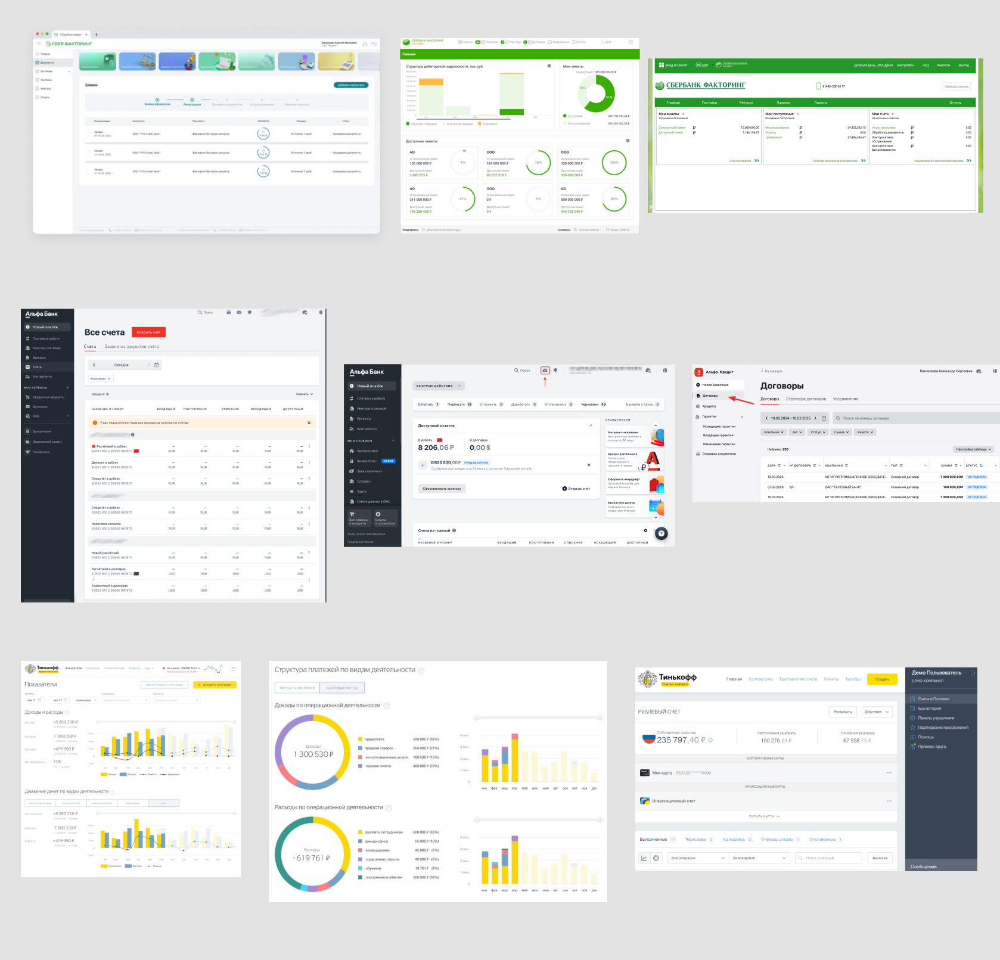
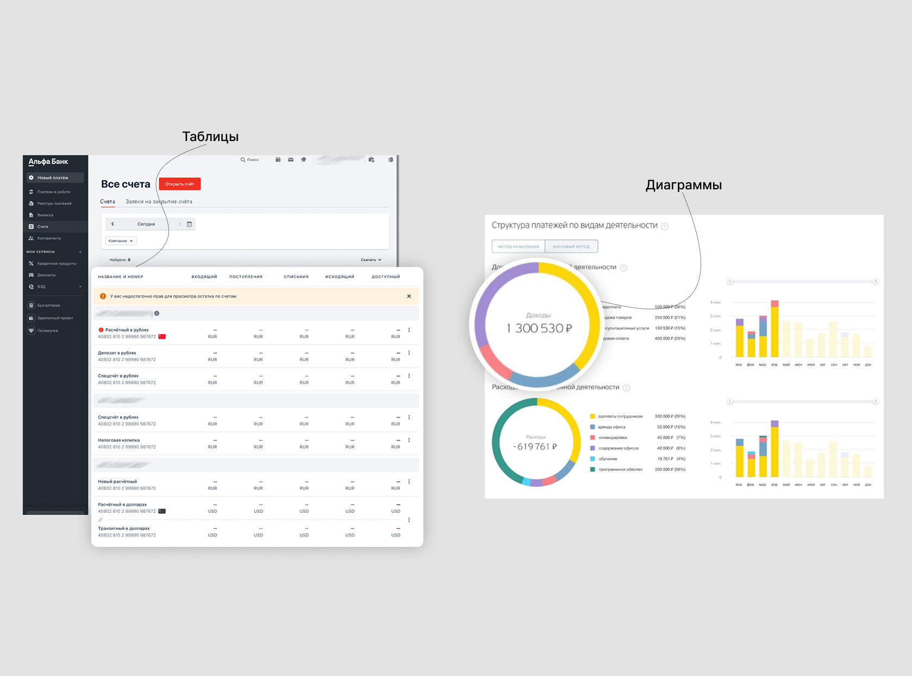
Бенчмаркинг
Привычные паттерны работы
Я посмотрел, как похожие продукты работают с большим количеством финансовых сущностей. В большинстве решений интерфейс держится на трёх опорах:
- таблицы как основной рабочий инструмент;
- диаграммы и сводки для быстрого понимания состояния бизнеса;
- системность: одинаковые паттерны фильтрации, статусов и действий.
Это помогло не промахнуться с ожиданиями аудитории и не делать интерфейс, который выглядит современно, но ломает привычный рабочий процесс.
Инсайты CEO и CPO
Что важно бизнесу
- Клиенты часто работают с платформой на ходу, поэтому мобильная веб-версия важна для загрузки счётов, просмотра статусов и быстрых уведомлений.
- Один общий интерфейс может путать роли, поэтому стоит разделять порталы для операционной команды, клиентов и должников.
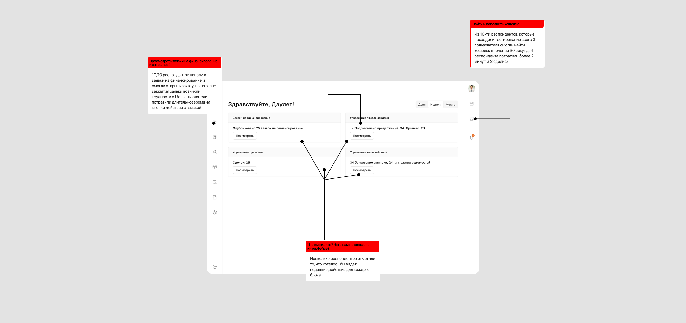
Работа с ментором
Моя зона ответственности
Проектные решения делал сам: навигацию, структуру разделов, таблицы, систему статусов, пустые и загрузочные состояния, первую итерацию на Ant Design. Старший дизайнер выступал ментором — проверял мои решения и давал комментарии. Часть решений после ревью я дорабатывал, но больше 70% проходили апрув в моём варианте. За ментором оставались стратегическая рамка и презентация бизнесу, за мной — само проектирование интерфейса.
Коридорное тестирование
Проверка на рабочих задачах
Для проверки навигации мы дали пользователям несколько рабочих задач:
- перейти в кошелёк и пополнить счёт;
- описать, чего не хватает на главном экране;
- найти заявки на финансирование и закрыть одну из них.
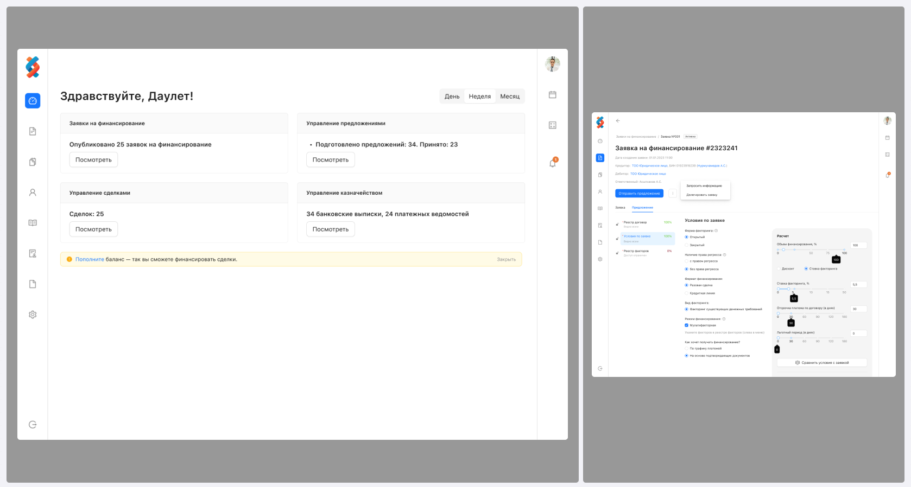
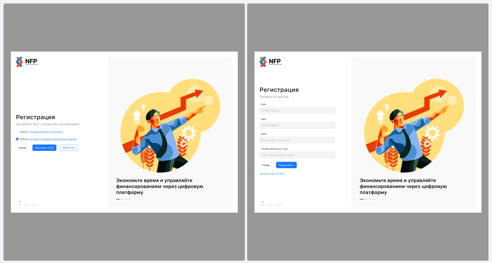
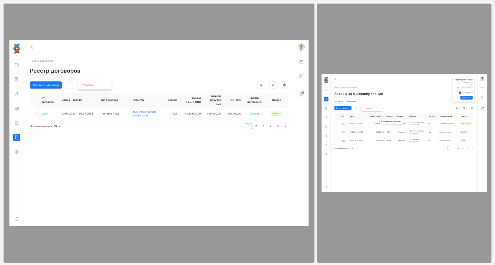
Первая итерация
Структура и состояния
Первую версию я собирал с опорой на Ant Design, чтобы ускорить вывод MVP и сохранить предсказуемость интерфейса. Основной акцент сделал на структуре разделов, таблицах, карточках статусов и понятных пустых состояниях.
Что проверяли
Понятность сценариев
После первой итерации мы смотрели, насколько быстро пользователи ориентируются в заявках, понимают состояние финансирования и находят действия без подсказок от команды.
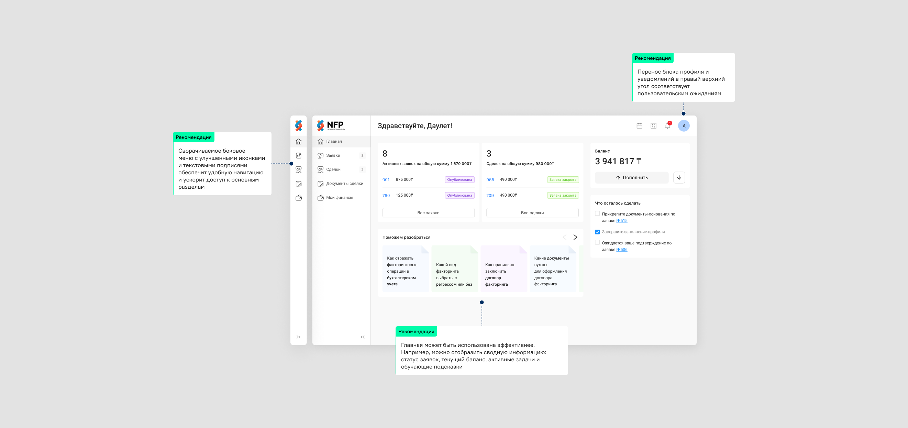
Фидбек бизнеса
Что потребовало доработки
Бизнес подтвердил выбранную логику, поэтому мы продолжили работу: провели UX-аудит вместе с представителем компании, уточнили спорные места и подготовили новую итерацию интерфейса.
Новая итерация и A/B-тест
Проверка нового решения
Рост частоты повторного пополнения на 10% — результат A/B-теста на сотрудниках компании за неделю: сравнивали старую и новую версию сценария пополнения счёта.
Повторным пополнением считали второе и последующие пополнения одним пользователем за период теста.
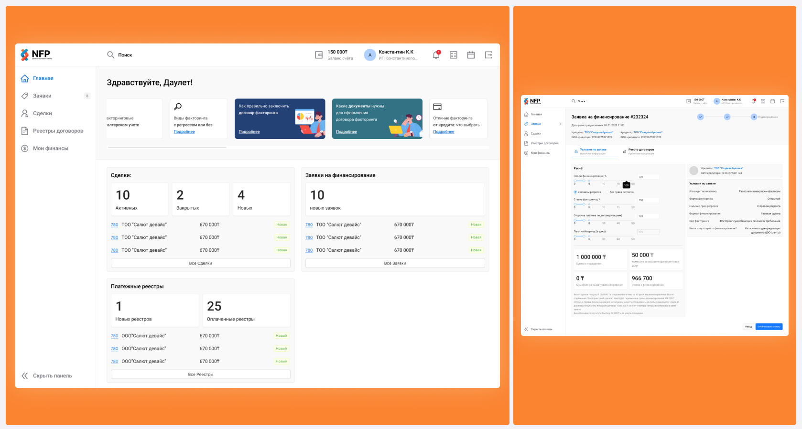
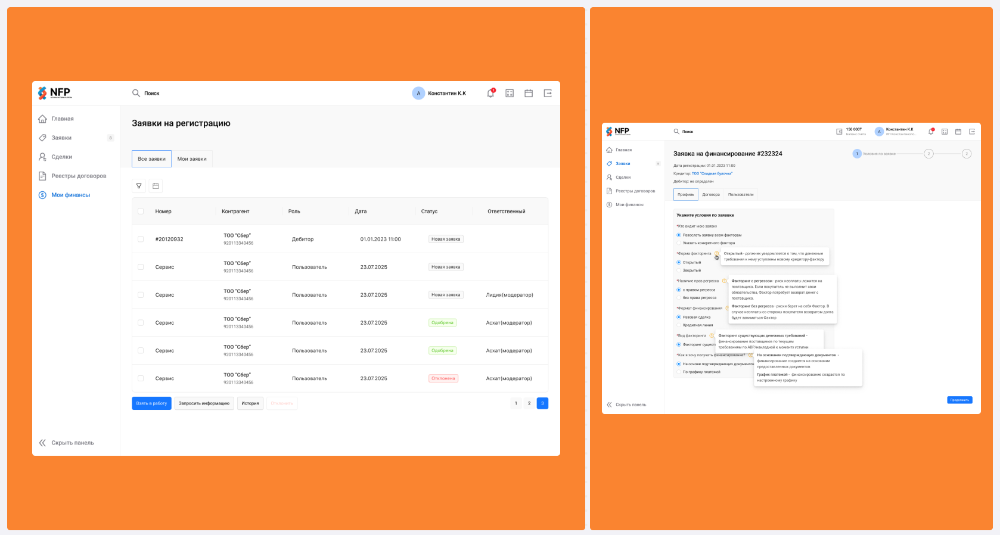
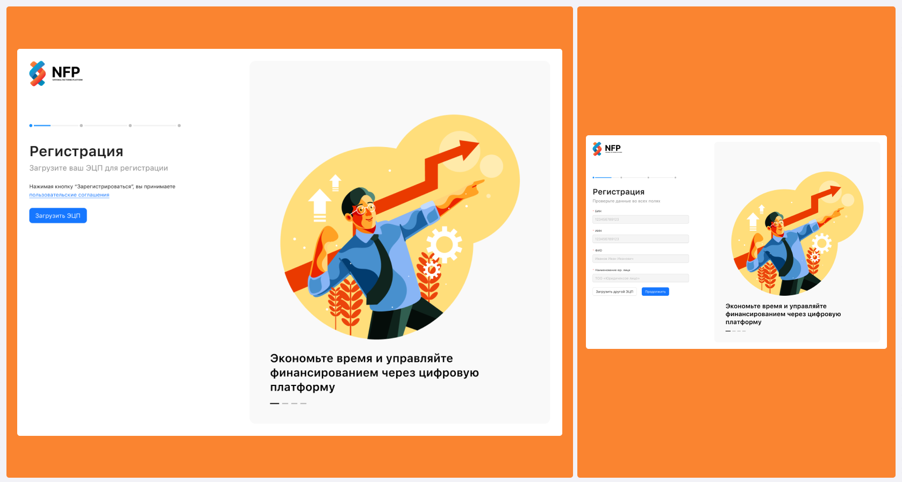
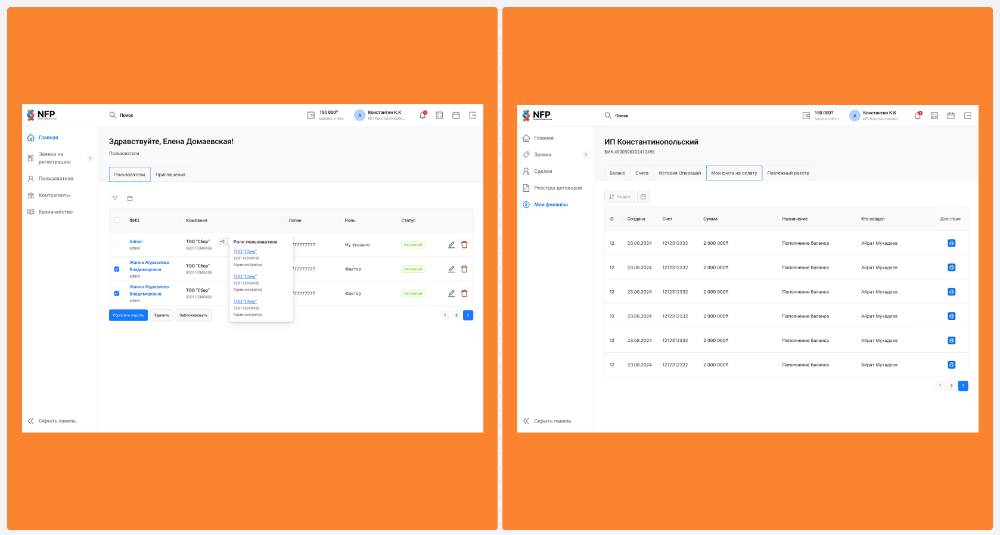
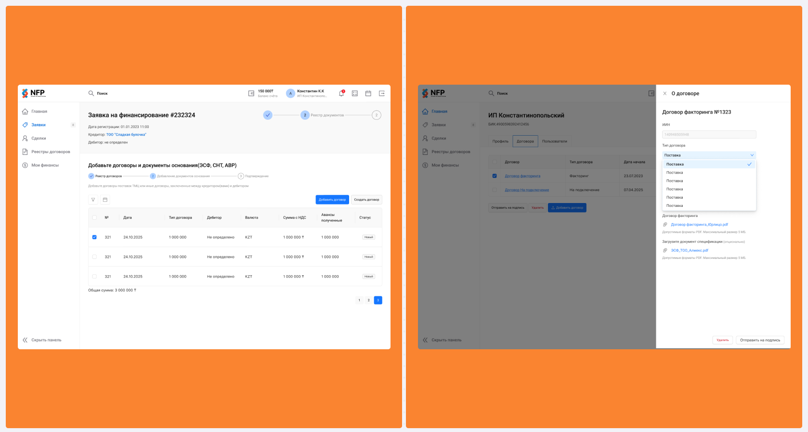
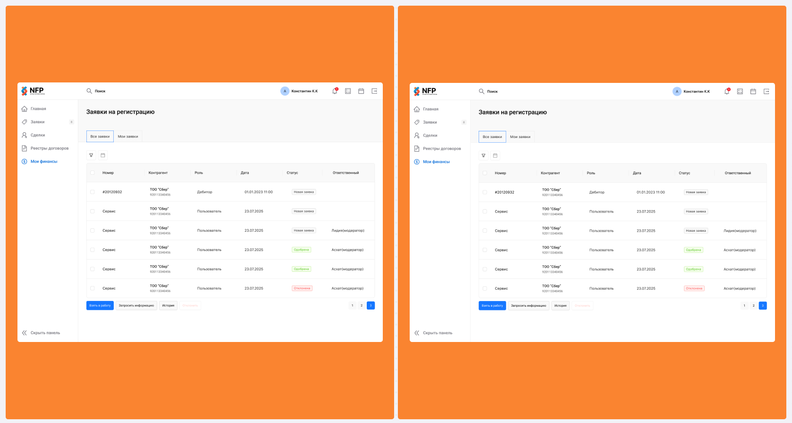
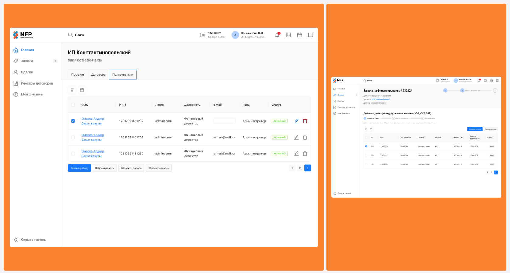
Результат
К чему пришли
MVP получил более цельный и системный интерфейс: роли разведены понятнее, ключевые сценарии стали быстрее, а решения подтверждены пользовательскими проверками и бизнесом.
- частота повторного пополнения счёта выросла на 10%;
- 8 из 10 пользователей самостоятельно справились с работой с заявками: нашли раздел заявок, поняли статус финансирования и закрыли заявку без подсказок от команды;
- платформа стала лучше подготовлена к масштабированию на разные роли и порталы.